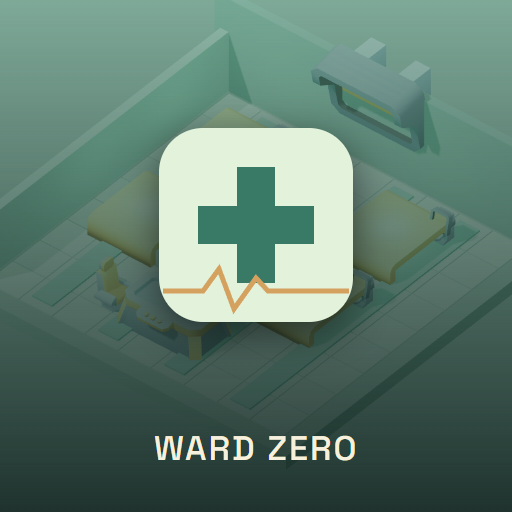

<- all projects

Ward Zero
PC
Volume
Live
Manage the last quarantine ward, protect your staff and expose the cover-up.
The official report says everything is under control, but your ward tells another story. As shift lead of the last quarantine ward, give each wave of new cases the staff and fictional supplies it needs, isolate the marked ones and keep your team from burning out. Between shifts, choose a shift lead and spend research on improvements. At the end of every shift, report the truth or alter the figures. There are 14 story shifts, 24 fictional case patterns, 8 shift leads and 20 ward improvements, with burnout, trust and evidence carrying over and three endings, plus a daily challenge and an endless run.